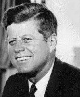

Rooms
Dossiers
|
John Kennedy
Office: President of the United States
John Kennedy was born in Brookline, Massachusetts on May 29, 1917, a descendent of Irish Catholics who had immigrated to America in the previous century. His father Joseph Kennedy was a combative businessman who became a multimillionaire, head of the Securities and Exchange Commission, and ambassador to Great Britain under Franklin Roosevelt.
In 1936, Kennedy entered Harvard University and graduated four years later. In 1941, shortly before the U.S. entered World War II, Kennedy joined the U.S. Navy. While on active duty in the Pacific in 1943, PT-109, the boat he commanded, was rammed by a Japanese destroyer off the Solomon Islands. Kennedy performed heroically in rescuing several of his crew, but he aggravated an old back injury and contracted malaria. After recovering Kennedy was discharged from the Navy in early 1945.
In 1946, Kennedy ran successfully for a Boston-based seat in the U.S. House of Representatives. He was then reelected in 1948 and 1950. As a congressman Kennedy backed social legislation that benefited his working-class constituents. Although generally supporting President Truman's foreign policies, he criticized what he considered the administration's weak stand against Communist China. Kennedy continued to advocate a strong, anti-communist foreign policy throughout his career.
In 1952, Kennedy ran and won a seat in the Senate. Kennedy was a relatively ineffectual senator. During parts of 1954 and 1955 he was seriously ill with back ailments and was therefore unable to play an important role in government. During his illness Kennedy worked on a book of biographical studies of American political heroes. Published in 1956 under the title Profiles in Courage, it won a Pulitzer Prize for biography in 1957.
In 1960, Kennedy put together a well financed, highly organized presidential campaign. Kennedy performed well in a series of unprecedented television debates with his opponent Richard Nixon. He promised tougher defense polices and progressive health, housing, and civil rights programs. His New Frontier, he said, would bring the nation out of its economic slump. Kennedy defeated Nixon by fewer than 115,000 popular votes, but lacked a reliable majority in congress. One of Kennedy's most successful programs was the U.S. Peace Corps, which sent thousands of Americans abroad to help people in developing nations.
For President Kennedy, the Cuban Missile Crisis began in the morning of October 16. Upon hearing about the missiles, Kennedy felt betrayed. For months, through secured and secret channels, the Soviets had been informing him that they would not place offensive weapons in Cuba. On that Tuesday morning, he appointed his most trusted advisors to serve on the Executive Committee of the National Security Council. With the help of EX-COMM, Kennedy navigated the dangerous waters of the crisis to a peaceful end. Throughout the crisis, Kennedy, like Khrushchev, was determined to avoid an armed conflict. The President got his wish on October 28 when Khrushchev agreed to the American proposal to end the crisis.
Twelve months later, while on a campaign trip in Dallas, Texas, John Kennedy was assassinated, ending his presidency.
|
[OpCenter (Home Page)] [Briefing] [Debriefing] [Quiz] [References]
| Questions, comments, suggestions? E-mail: cmc-webmaster@stolaf.edu
This page and graphics copyright 1997 ThinkQuest Team 11046. |